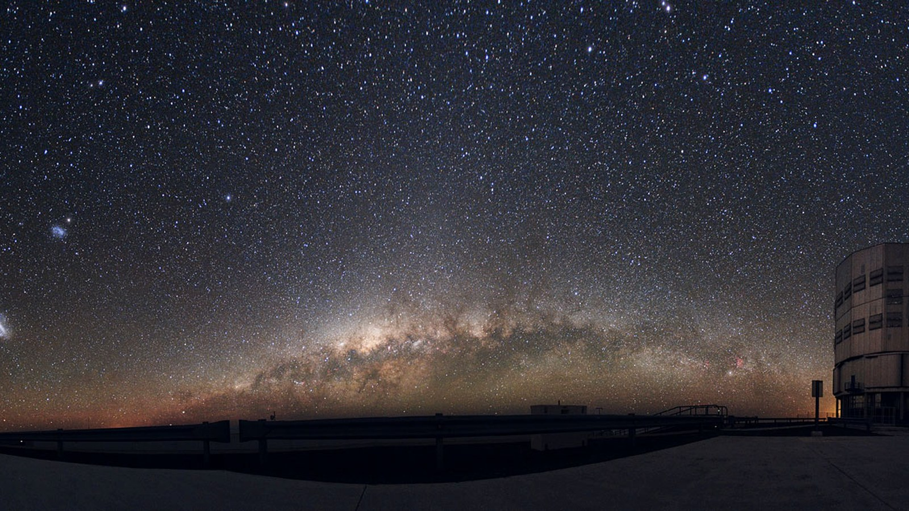
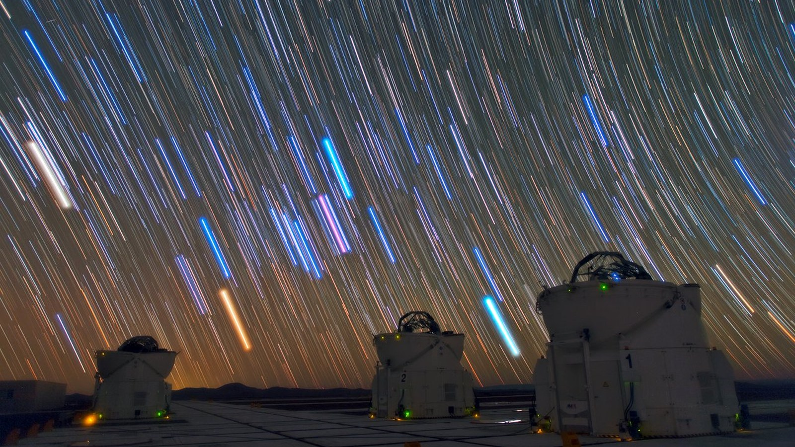

问题的可逆性
光污染与其他环境污染最主要的区别是：不需要治理存量。空气、水与土壤一旦受污染需要长期修复，而光污染在照明改正后于当晚即消失，是各类环境问题中见效最快的一类。

下面按"从一盏灯到一座城"的顺序排列。
照明五原则
2020 年 2 月 27 日，国际暗空协会（IDA）与照明工程学会（IES）共同通过《室外照明五原则》，为目前国际通行的改造依据。五条原则可概括为五个词：
| 原则 | 含义 |
|---|---|
| 有用 | 每一处照明都应有明确用途。没有用途的照明直接取消。 |
| 定向 | 光只投向需要被照亮的地方。向下照，不向水平和天空漏。 |
| 低亮度 | 亮度不超过所需。参考专业机构（如 IES、CIE）建议的最低值。 |
| 受控 | 只在需要的时候亮。按时段或按感应控制，后半夜降低或熄灭。 |
| 暖色 | 尽量降低蓝光成分。多数场景建议 2200K，蓝光占比不超过 8%。 |
五条原则同时回应光污染、能源消耗与眩光安全三个问题，这也是其能同时被天文界与照明工程界接受的原因。
技术路径
全遮光灯具
发光面完全朝下、水平方向不外露。这是各项措施中效果最直接的一项：相同亮度下更换为全遮光灯具后，射向天空的光可接近于零。路灯、庭院灯与景观灯均有成熟的遮光型号。
降低色温
把冷白光换成暖光。IDA 的建议是多数照明装置使用 2200K，并验证蓝光占比不超过 8%；在保护区、野生动物栖息地、公园、天文台和观星地点等敏感区域，建议使用零蓝光、光谱较窄的照明装置。杭州西溪湿地属于《杭州市城市照明管理办法》划定的「黑天空保护区」，按这一条执行是合适的。
分时调光与感应控制
后半夜人流与车流下降后，将照度降至一半或更低，无人无车时进一步降低。IDA 指出此类主动控制在户外照明中"未得到充分利用"，而它可同时减少光污染与能源消耗。人行道、支路与停车场等低频使用区尤为适用。
减少向上的装饰性照明
建筑泛光、树冠投光、激光与动态广告是效率最低的一类照明，将大量光直接送向天空。取消或大幅削减这一类，是性价比最高的做法。
成本与收益
推动改造需要可量化的成本收益。以下为本站作者在杭州西溪湿地福堤走廊的初步估算，属方案测算，尚未经实际改造验证：
| 项目 | 测算值 |
|---|---|
| 改造成本 | 约 2–4 万元（约 20 盏灯具 + 智能调光设备 + 安装） |
| 预期节电 | 约 50%（分时调光 23:00 后降至 50% 亮度） |
| 年节省电费 | 约 7000–8000 元 |
| 静态回收期 | 约 2–4 年 |
| 预期天光改善 | 约 +0.3–0.5 mag/arcsec² |

个人层面
- 家里的户外灯。如果有院子或阳台照明，换成暖色（≤3000K）、加装向下遮光罩、装感应或定时开关。这三项改动成本很低。
- 关掉不用的灯。尤其是整夜亮着的装饰照明、店铺招牌、走廊灯。
- 拉窗帘。减少自家灯光外泄，同时也改善自己的睡眠环境。
- 记录并反映。看到明显不合理的照明（向上投射的广告灯、照进居民楼的泛光），可以拍照记录时间地点，向物业、属地街道或生态环境部门反映。
- 选择暖色灯具。购买时看包装上的色温标注，避免 5000K 以上的冷白光用于户外。
学校与社区
- 校园照明排查。用手机拍下学校夜间照明的情况，标注哪些灯是向上溢光的、哪些整夜不灭。这份清单可以直接交给后勤部门。
- 组织公众观测活动。天文社、科学社团可以带同学在校园里做一次夜空观测，让参与者亲眼看到自己所在城市的天空是什么样。
- 征集公众意见。本站作者在西溪湿地做过一次展板与签名征集，收集居民对"保留一片能看见星星的区域"的支持（见第一部分第 4 张配图）。这类材料在推动政策时比数据更有说服力。
- 把数据公开。测量结果、照片、对比图公开出来，其他地方的人可以直接参考。
公众科学
如果没有仪器，也不妨碍你参与真实的科学观测。目前有两个成熟的项目：
Globe at Night
由美国国家光学红外天文研究实验室（NOIRLab）运营，2006 年启动，目前数据库已有超过 30 万次观测，覆盖 180 多个国家。
参与流程：
- 选一个晴朗无月的夜晚；
- 到户外，让眼睛适应黑暗约 10 分钟；
- 把看到的星空与项目提供的星等图（按目标星座）作对比；
- 用手机或网页提交结果，附带位置与时间。
它的价值在于覆盖面。任何仪器网络都不可能布设到这么多地点，而人眼观测可以。Kyba 等人在 2023 年发表于《Science》的那篇研究，正是建立在这批公众观测数据之上——他们用 2011 至 2022 年间 51,351 次观测发现，天空亮度正以每年 9.6% 的速度增长。